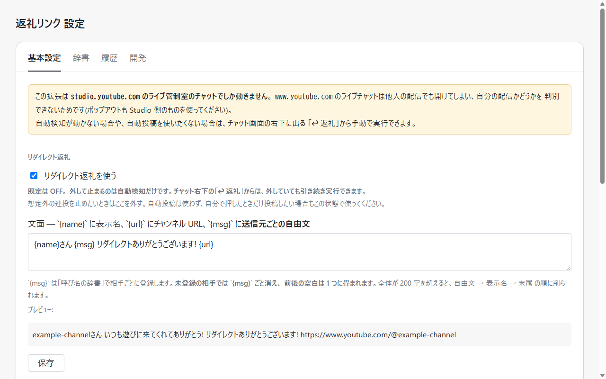
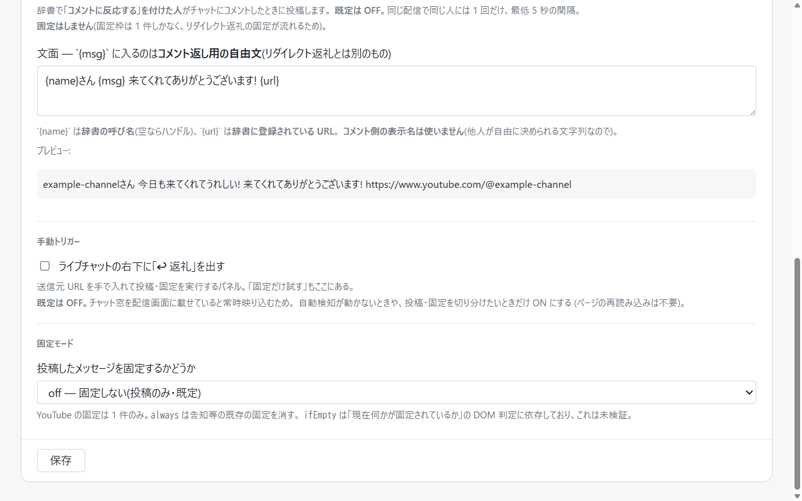
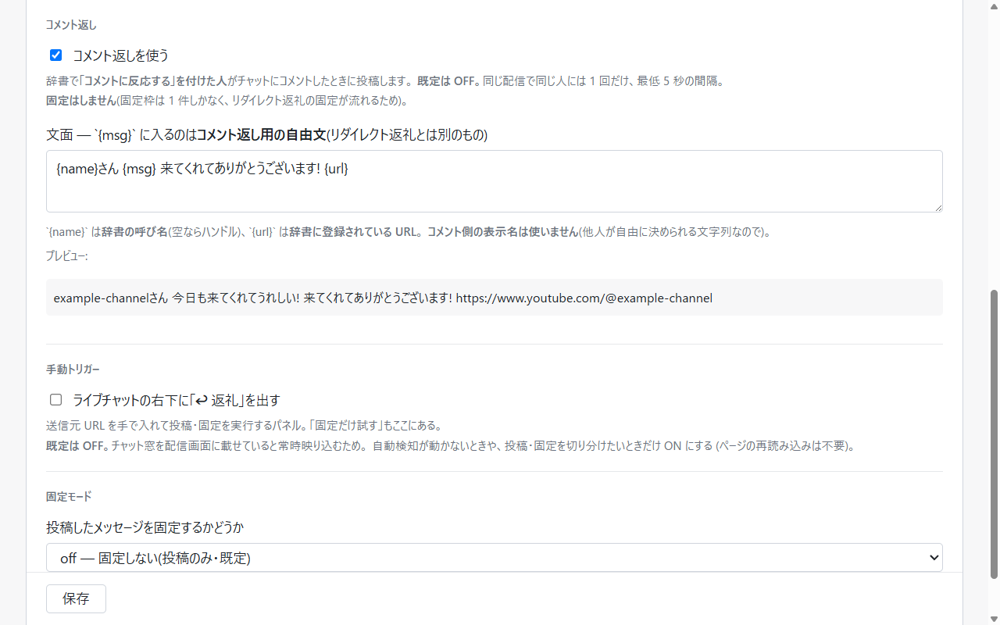
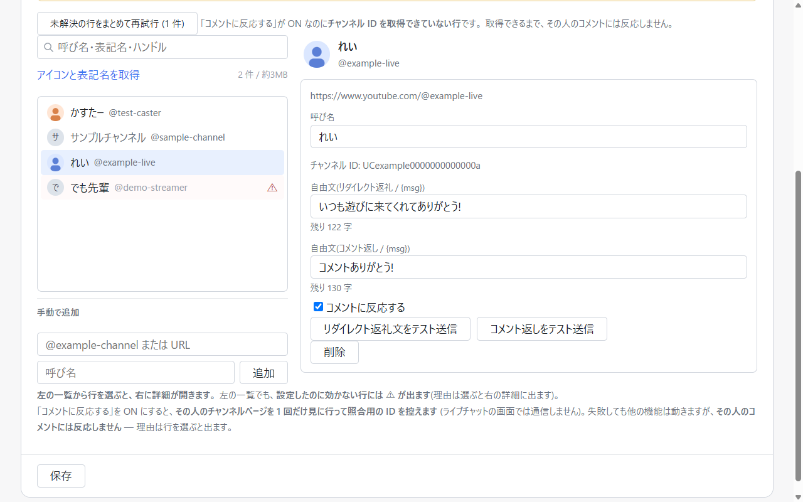

何ができるか
配信中に来てくれた人へ、その人のチャンネル URL をチャットに出して返礼するのを肩代わりします。
引き金は、2 つ。
-
リダイレクトを受け取ったとき受信を検知 → 投稿 → 固定
他チャンネルからライブリダイレクトを受け取ると、送信元のチャンネル URL をチャットへ投稿し、その投稿をチャット上部に固定します。
-
登録した人がコメントしたとき既定 OFF コメントを検知 → 投稿 (固定はしない)
辞書で「コメントに反応する」を付けた人がライブチャットにコメントすると、その人のチャンネル URL をチャットへ投稿します。
受け取った時点で肩代わりするので、配信を止めずに返礼できます。リダイレクトもコメントも相手からの厚意で、取りこぼすと実害があるのに、配信中は手が離せません。
⚠️ 使う前に読んでください
- YouTube の規約上、グレーな行為を含みます。利用規約は「自動化された手段を使用して本サービスにアクセスすること」を禁じています。本拡張がこれに当たるかは文言からは決まらず、公式見解も、この形での処分の前例も見つかっていません。「安全である証拠」ではなく「証拠が無い」という状態です (調べたことは全部ここに置いてあります)。
- 投稿はあなた自身のアカウントの名義で行われます。何かあったとき失うのはあなたのチャンネルです。
-
検証は限られています。実配信で通ったのは日本語 UI・Studio のチャット・1 環境だけです。2026-08-23 の実配信で自由文 (
{msg}) 入りの文面とコメント返しは通りましたが、次の 3 点はまだ確かめられていません — チャットを開き直したときに過去のコメントへ一斉投稿しないか / 既定の固定モードifEmptyの判定が実際の固定バナーを拾うか / 受信から投稿までの所要時間。 -
送信元の検知は推測を含みます。取り違えると、その人に宛てて書いた一文
(
{msg}) がそのまま別の相手への投稿に載ります。取り違えて別の人に読まれても困らない内容だけを書いてください。
リスクを自分で判断・管理できる人が、自己責任で使うことを想定しています。判断がつかない場合は、使わないでください。

入れかた
未署名の拡張です。デベロッパーモードでの読み込みになり、自動更新もされません (新しい版への入れ替え方は導入手順 / 設定は引き継がれます)。
-
Releases から
shoutlink-<version>.zipをダウンロードする - 展開して、消さない場所に置く (Chrome はこのフォルダを読み続けます)
- Chrome で
chrome://extensionsを開き、右上の「デベロッパー モード」を ON - 「パッケージ化されていない拡張機能を読み込む」→ 展開したフォルダを選ぶ
読み込むと、拡張のカードに studio.youtube.com と www.youtube.com の許可が表示されます。拡張が読み込まれて動くのは studio.youtube.com のライブ管制室のチャットだけで、www.youtube.com のほうは設定画面がチャンネル ID を控えに行くためだけの許可です (下の「データの扱い」)。過去に起こした「www.youtube.com でも拡張が動いていた」不具合とは別物です。
YouTube の画面構造が変われば、ある日突然動かなくなります (DOM に依存しているため)。直すまで反応しなくなるだけで、誤って投稿する形では壊れません。
詳しい設定と、動かないときの切り分けは導入・設定・切り分けにあります。
自動投稿を使わない設定
自動検知に任せるのが不安なら、ライブチャットへの投稿が、自分でボタンを押したときにしか起きない形から始めるのを勧めます。設定で「リダイレクトを自動検知して投稿する」を外し、「コメントに反応して投稿する」も外したままにして (既定 OFF。これは別のスイッチで、片方を外しても止まりません)、「ライブチャットの右下に『↩ 返礼』を出す」を入れてください (このボタンは既定では出ません。配信画面への映り込み対策)。
検知そのものは動き続けるので、辞書への自動登録は行われます (一覧に相手が載るだけで、チャットには何も出ません)。
細かい設定
使い始めてから調整する項目です。入れた直後に読む必要はありません。
| 投稿文 | テンプレートで編集できる ({name} に表示名、{url} にチャンネル URL、{msg} に送信元ごとの自由文) |
|---|---|
| 呼び名 | 送信元ごとに呼び名を登録できる。リダイレクトを受けた相手は自動で一覧に載る |
自由文 ({msg}) | 送信元ごとに「その相手への一言」を登録できる (1 件 200 字まで)。これはリダイレクト返礼用で、コメント返し用の自由文とは別のフィールド |
| 自由文が未登録のとき | その相手への投稿では {msg} ごと消える (プレースホルダは残らない) |
| 200 字を超えたとき | 投稿時に 自由文 → 表示名 → 末尾 の順で削る。自由文か表示名を削って収まる場合、URL は壊れない (両方削っても収まらないときだけ末尾を切る)。設定画面には投稿文全体に対する残り字数が出る |
| 固定モード | off 固定しない / ifEmpty 既存の固定が無いときだけ (既定) / always 上書き |
| 多重発火の抑止 | 同じ配信で同じ相手には 1 回まで。秒数では判定しない。投稿履歴に基づくのでリロードをまたいでも引き継がれる |
| 配信 ID が取れない画面 | 6 時間の窓で同一配信とみなす → 上限が効かない場合 |
| 設定を試す | 辞書の行を開くと出る「テスト送信」ボタン。開いている配信のチャットへ実際に投稿でき、投稿履歴には残らないので何度でも試せる |
| 手動トリガー | チャット右下の「↩ 返礼」。既定は OFF (配信画面への映り込み対策)。設定で出せば、自動投稿を切っていても実行できる |
| 止める | 設定の「リダイレクトを自動検知して投稿する」を外せば、リダイレクト返礼の自動投稿は即止まる (コメント返しは別のスイッチ) |

always は告知などの既存の固定を消す
コメント返し (既定 OFF)
設定のスイッチ (既定 OFF) と、辞書の行ごとのフラグ (既定 OFF) の両方を自分で入れないと動きません。リダイレクトを受けて自動で一覧に載った相手にも、フラグは付きません。
| 投稿文 | リダイレクト返礼とは別のテンプレート (既定 {name}さん、来てくれてありがとうございます! {url})。{msg} に入る自由文も別のフィールド |
|---|---|
| 名前と URL の出どころ | 辞書に登録されている呼び名と URL。コメント側の表示名は使わない (第三者が決められる文字列を配信者名義の投稿に載せないため) |
| 固定 | しない。固定枠は 1 件しかなく、上書きするとリダイレクト返礼の固定が流れるため |
| 頻度の上限 | 同じ配信・同じ人には 1 回まで / 投稿の間隔は最低 5 秒 / 1 配信あたり 20 件まで (設定ではなく固定値)。3 つとも無条件ではありません → 上限が効かない場合 |
| リダイレクト返礼との関係 | 抑止は非対称。同じ配信でその人へリダイレクト返礼を投稿済みならコメント返しはしない。逆にコメント返し済みでもリダイレクト返礼は投稿する (そちらが本命のため) |
| 反応しない | 辞書に載っていない人 / フラグが OFF の人 / 配信者自身 / スーパーチャット・メンバー加入・システムメッセージ / スイッチを入れた時点で既にあるコメント (例外あり) |
| 照合 | 投稿者の ID (UC…) と辞書に控えたチャンネル ID の一致だけで判定する。表示名では照合しない (同名の別人、改名、なりすましで別人のリンクを貼るため) |
| チャンネル ID を控える | まだ控えていない行で、URL から直接 ID を取れないときだけ、その人のチャンネルページを 1 回読みに行く。.../channel/UC… の形なら通信せずに分かる |
| 取得する場面 | 「コメントに反応する」を ON にしたときと、再試行を押したとき。どちらも設定画面での操作で、ライブチャットの画面では取得しない |
| 取れなかった行 | コメントに反応しない (設定画面に ⚠ が出る)。リダイレクト返礼は今までどおり動く |


上限が効かない場合
自動投稿の量に直結するので、ON にする前に読んでください。
- 「最低 5 秒」は、同じチャット画面を開いている間だけです。直前の投稿時刻はメモリにしか持っていないので、投稿の直後に開き直すと 5 秒未満で次が出ることがあります。
- 「スイッチを入れた時点で既にあるコメント」の判定は分単位です。タイムスタンプ (
5:17 PM) と監視開始から 10 秒の猶予で切っているので、入れたのと同じ分のコメントがチャットの再構築 (ポップアウトの開き直し、フィルタ切替、仮想スクロール) で流れ直すと新しいコメントとして扱われます。残る歯止めは「1 人 1 回」と「20 件」だけです。 - 「同じ配信」は配信 ID で判定しています。管制室の埋め込みチャットでは ID を取れないことがあり、そのときは「直近 6 時間」を同一配信とみなします。別の配信でも 6 時間以内なら投稿しない一方、ID が取れないまま 6 時間を超える配信では、同じ人への 2 回目や 21 件目が出ます。ポップアウトのチャット (
?is_popout=1&v=...) なら ID は確実に取れます。 - リダイレクト返礼の側も同じ規則です。配信 ID が取れない画面では6 時間の窓で同一配信とみなし、それを超えると同じ人への 2 回目が出ます。
投稿するのは studio.youtube.com のライブ管制室のチャットだけです。
www.youtube.com のライブチャットは他人の配信でも開けてしまい、自分の配信かどうかを判別できないため、拡張はそこには読み込まれません (意図的です。許可表示に出る www.youtube.com については「入れかた」)。
ストアに出ても「安全」の裏付けにはなりません
Chrome ウェブストアの審査は、YouTube の規約に触れるかどうかを見てくれません。見るのは単一用途・権限の妥当性・データの扱いです。つまり審査を通っても「規約上セーフ」の裏付けにはならず、通ったという事実が誤った安心になる。
そしてストアに出すというのは、自分がリスクを取ることではなく、事情を知らない人にリスクを負わせることでもあります。失われるのは開発者のアカウントではなく、入れた人のチャンネルです。
なので、出す先はストアの「限定公開」にします (2026-08-23 に決めました。まだ出ていません)。限定公開はストアの検索・一覧に出ないので、たどり着けるのはこのページと GitHub のリンクからだけです。知らない人が検索でふらっと入れてしまう形にはなりません。
切り替えるのは、署名されて自動更新が効くようになるためです。いまの未署名 ZIP は自動更新されないので、取り違えのような不具合を直しても、古い版を使い続ける人には届きません。そこが直ります。
グレーな点は今までどおり全部ここに書きます。読んで自分で判断できる人だけが使えばいい、という形は変えません。
データの扱い
- 開発者のサーバへデータを送ることはありません。開発者のサーバはなく、解析も広告もありません
-
通信するのは 1 か所だけです。設定画面で「コメントに反応する」を ON にしたとき (と再試行を押したとき) に、辞書に登録されているチャンネルのページを 1 回だけ取得します
(照合用のチャンネル ID を読み取るため。既に控えている行や、
.../channel/UC…の形の URL で登録されている行では取得しません)。送るデータはなく、ログイン状態も送りません。この取得を行うのは設定画面だけで、ライブチャットの画面では行いません (投稿・固定そのものは当然ライブチャット上で行われます) - 設定・呼び名の辞書・投稿履歴は、Chrome の拡張機能ストレージにだけ保存されます
-
動作設定は
chrome.storage.sync(Chrome の同期を有効にしていれば別の PC にも複製されます)。呼び名の辞書 (呼び名 / 自由文 2 種 / 「コメントに反応する」のフラグ / 照合用のチャンネル ID) と投稿履歴はchrome.storage.localに置き、同期しません。投稿履歴は 7 日 / 種別ごと 200 件を超えた古い分を、次に投稿を記録するときに捨てます。 -
呼び名の辞書は以前
chrome.storage.syncに置いていました。容量上限に近づくためlocalへ移しています。以前の辞書は端末の中で 1 度だけ引き継がれます (外部への送信は伴いません) - 作者があなたのデータを見ることはありません